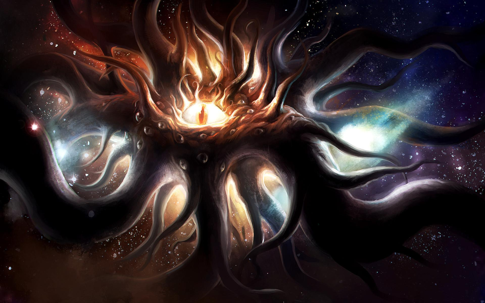

| 'Umr At-Tawil | |
|---|---|

Género:Andrógino Armas:Magia Categoria:Avatar de Yog-Sothoth |
'Umr At-Tawil-El de la vida prolongada'Umr At-Tawil-El es un avatar de Yog-Sothoth que opera en la parte más inaccesible de las Tierras del Sueño. Aparece en el relato A través de las puertas de la Llave de Plata. Apariencia'Umr At-Tawil se manifiesta como una figura humanoide alta y delgada, cubierta por un velo que oculta su rostro. Se dice que su rostro es tan pavoroso que su sola visión provoca la pérdida de la cordura. ComportamientoEste avatar de Yog-Sothoth mencionado en el Necronomicón es considerada una entidad relativamente benévola, ya que no es abiertamente hostil al ser humano. Custodia la Última Puerta, y en ocasiones puede recompensar a los viajeros que llegan hasta él concediéndoles algún deseo. También se sabe que 'Umr-At-Tawil está rodeado por unas divinidades menores con las que comparte su poder y que posee magia para bloquear o desviar otros tipos de magia. |
Informacion de Monstruos
| Antiguos | |
|---|---|
Sistema Social:Urbano Armas:Tentáculos y colmillos (en la parte superior) Categoria:Raza extraterrestre |
"Los Primordiales" o AntiguosSon una de las primeras razas que poblaron la Tierra según Lovecraft. Protagonizan el relato En las Montañas de la Locura. AparienciaLos Antiguos se caracterizan, asimismo, por tener una cabeza que, vista desde arriba, se asemeja a una estrella de mar con un ojo en cada una de sus prolongaciones. Con respecto a su movilidad, se desplazan mediante cuatro tentáculos ubicados en la base de su estructura, y asimismo cuentan con otras prolongaciones que actúan a modo de brazos. Información conceptual y rolSe dice que estos seres fueron la primera raza alienígena en colonizar la Tierra, aproximadamente en el periodo Neoproterozoico. Destacaron por la construcción de monumentales ciudades, de las que hoy en día solo se conserva una, llamada Corona Mundi, que se encuentra perdida en las mesetas de la Antártida. Para este trabajo se sirvieron de sus sirvientes, los shoggoth, a los que habían creado mediante ingeniería genética. Los Antiguos vivirían una época dorada, caracterizada por su riqueza artística y arquitectónica, pero el progresivo desarrollo intelectual de los shoggoths les llevó a rebelarse contra sus amos, iniciando cruentas guerras. Esto supuso el inicio de la decadencia de los Antiguos, que culminaría con la invasión de los Primigenios, dirigidos por el gran Cthulhu. Las semillas estelares enviadas por Cthulhu aprovecharon el caos organizado por la rebelión shoggoth para atacar y llevar al borde de la extinción a los Antiguos. En esta carnicería también participaron los mi-go, que acabaron con los que moraban en las tierras del norte. |
| Azathoth | |
|---|---|

Clases:Dioses Exteriores
Apodos:
Armas:Posee unos tentáculos o seudópodos capaces de arrasarlo todo |
AzathothAzathoth es la deidad más poderosa de la mitología lovecraftiana. Encarna la omnipotencia, por lo cual supera infinitamente en fuerza a dioses tan emblemáticos como Cthulhu, Nodens o Yog-Sothoth, y su mera presencia augura muerte y destrucción. AparienciaPese a no ser descrito nunca con exactitud, se deja entrever que Azathoth es una masa informe repleta de tentáculos que habita en el centro del caos primigenio, que en realidad no deja de ser una prolongación de su propio ser. Suele aparecer representado con innumerables fauces y ojos, mostrándose de esta manera como el más puro concepto de confusión y desorden estructural. Información conceptual y rolAzathoth nunca aparece físicamente, lo que se sabe de él se debe únicamente a alusiones dadas por el Necronomicón. Son precisamente los textos de los pasajes en los que figura su nombre lo único que certifica su existencia, Se dice entre otras cosas que Azathoth es una deidad ciega y carente de inteligencia. Es precisamente su estupidez lo que hace que sea tan peligroso, ya que por ella es irreflexivo e insensible al dolor que puede causar en el caso de que sufra un ataque de cólera; pero, para evitar esto, unos monstruosos flautistas tocan una melodía hipnótica que le arrulla y le mantiene adormecido. Para los demás dioses, Azathoth es más una fuerza de la naturaleza que un compañero. De hecho, son sus propios "aliados" los que utilizan a los flautistas para hipnotizarlo y que no pueda escapar a su control. Azathoth les inspira más miedo que respeto y precisamente en el poema Azathoth está implícito que ni siquiera Nyarlathotep, siendo el ser más cercano a él, siente afecto por Azathoth, e incluso se atreve a ridiculizarlo. En relación a esto se puede decir que la estupidez de Azathoth lo convierte en la perfecta marioneta de dioses más inteligentes, |
| Bokrug | |
|---|---|

Clases:Dioses Exteriores
Apodos:
Armas:Posee unos tentáculos o seudópodos capaces de arrasarlo todo |
AzathothAzathoth es la deidad más poderosa de la mitología lovecraftiana. Encarna la omnipotencia, por lo cual supera infinitamente en fuerza a dioses tan emblemáticos como Cthulhu, Nodens o Yog-Sothoth, y su mera presencia augura muerte y destrucción. AparienciaPese a no ser descrito nunca con exactitud, se deja entrever que Azathoth es una masa informe repleta de tentáculos que habita en el centro del caos primigenio, que en realidad no deja de ser una prolongación de su propio ser. Suele aparecer representado con innumerables fauces y ojos, mostrándose de esta manera como el más puro concepto de confusión y desorden estructural. Información conceptual y rolAzathoth nunca aparece físicamente, lo que se sabe de él se debe únicamente a alusiones dadas por el Necronomicón. Son precisamente los textos de los pasajes en los que figura su nombre lo único que certifica su existencia, Se dice entre otras cosas que Azathoth es una deidad ciega y carente de inteligencia. Es precisamente su estupidez lo que hace que sea tan peligroso, ya que por ella es irreflexivo e insensible al dolor que puede causar en el caso de que sufra un ataque de cólera; pero, para evitar esto, unos monstruosos flautistas tocan una melodía hipnótica que le arrulla y le mantiene adormecido. Para los demás dioses, Azathoth es más una fuerza de la naturaleza que un compañero. De hecho, son sus propios "aliados" los que utilizan a los flautistas para hipnotizarlo y que no pueda escapar a su control. Azathoth les inspira más miedo que respeto y precisamente en el poema Azathoth está implícito que ni siquiera Nyarlathotep, siendo el ser más cercano a él, siente afecto por Azathoth, e incluso se atreve a ridiculizarlo. En relación a esto se puede decir que la estupidez de Azathoth lo convierte en la perfecta marioneta de dioses más inteligentes, |